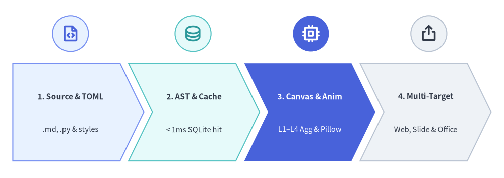
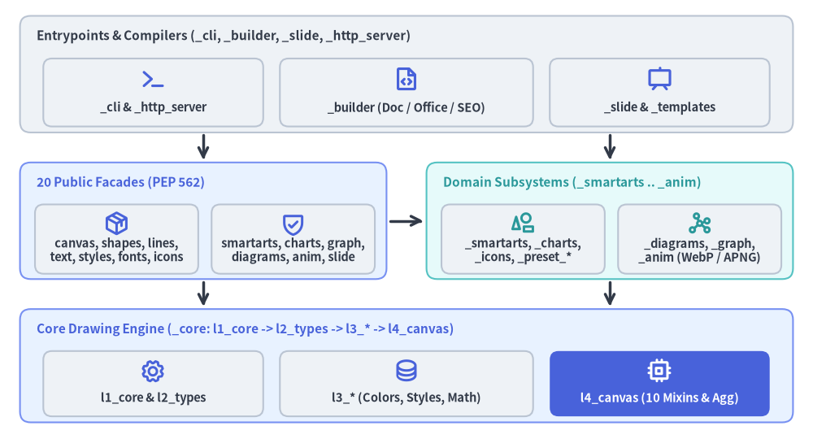

System Architecture & Design Principles
Drawlib is engineered from the ground up as a pure-Python illustration, slide, and documentation compilation framework. It eliminates the divide between software source code and visual documentation by treating diagrams, animations, technical specs, and slide decks as version-controlled software artifacts.
This chapter details Drawlib's end-to-end execution pipeline, lazy public package facade, internal subsystem boundaries, and deterministic runtime invariants.

Source Code
from drawlib.canvas import save, setup
from drawlib.icons import phosphor
from drawlib.shapes import circle
from drawlib.smartarts import ChevronProcess
from drawlib.styles import Styles
setup(width=118, height=42)
pipeline = ChevronProcess(
style=Styles.Neutral,
text_style=Styles.DarkBold.patch(text_size=11.0),
description_style=Styles.Dark.patch(text_size=10.5),
corner_angle=64.0,
spacing=2.0,
flat_left_end=True,
)
pipeline.add(
"1. Source & TOML",
description=".md, .py & styles",
style=Styles.PrimaryNeutral,
)
pipeline.add(
"2. AST & Cache",
description="< 1ms SQLite hit",
style=Styles.SecondaryNeutral,
)
pipeline.add(
"3. Canvas & Anim",
description="L1–L4 Agg & Pillow",
style=Styles.PrimaryFlat,
text_style=Styles.WhiteBold.patch(text_size=11.0),
description_style=Styles.White.patch(text_size=10.5),
)
pipeline.add(
"4. Multi-Target",
description="Web, Slide & Office",
style=Styles.Neutral,
)
pipeline.draw(xy=(3.0, 4.0), width=112.0, height=23.0)
# Stage icon badges aligned above each chevron body
stage_icons = [
(16.5, phosphor.file_code, Styles.PrimaryNeutral, Styles.PrimaryBold),
(45.2, phosphor.database, Styles.SecondaryNeutral, Styles.SecondaryBold),
(72.8, phosphor.cpu, Styles.PrimaryFlat, Styles.WhiteBold),
(100.4, phosphor.export, Styles.Neutral, Styles.DarkBold),
]
for cx, icon_fn, badge_style, icon_style in stage_icons:
circle((cx, 34.0), radius=4.2, style=badge_style)
icon_fn((cx, 34.0), width=4.4, style=icon_style)
save()
1. Concept: Core Architectural Tenets
Drawlib addresses the limitations of GUI diagramming tools and low-level plotting libraries through three architectural principles:
1.1. Declarative Python Over DSLs & Plotting Boilerplate
External diagram DSLs (Mermaid, PlantUML, DOT) lack general-purpose programming expressiveness and fine-grained layout control, while low-level graphics APIs (raw Matplotlib, Cairo, SVG DOM) demand hundreds of lines of boilerplate for simple boxes and connectors.
Drawlib exposes a declarative, strongly typed Python API across every abstraction level:
- Primitives & High-Level Classes: Concise functions (
rectangle(),line(),text()) compose seamlessly with structured classes (ChevronProcess,ArchitectureDiagram,ArchitectureGraph,BarChart,Animation). - Data-Driven Authoring: Standard Python loops, comprehensions, dataclasses, and JSON/TOML payloads drive diagram generation directly without template string concatenation.
- Static & Runtime Type Safety: Every public function and model is annotated for IDE autocompletion (
py.typed) and guarded by lazy Pydantic call validation.
1.2. Two-Tier Headless Execution Model
Drawlib separates core graphics rasterization from paginated browser/Office export so routine rendering stays fast and lightweight:
- In-Memory Canvas & Animation Engine (No Browser Required): Static images (
PNG,SVG,WebP) and multi-frame animations (WebP,APNGviadrawlib.anim) render 100% in-memory through Matplotlib's non-interactiveAgg(Anti-Grain Geometry) backend and Pillow—requiring zero X11/Wayland servers or browser processes. - Managed Chromium & Native OpenXML Export: Paginated print PDFs (
build pdf) and live DOM bounding-box extraction for PowerPoint slides (build pptx) delegate to a shared, auto-provisioned headless Playwright Chromium launcher (_builder/_common/browser.py), while Word documents (.docx) and PowerPoint slide XML (.pptx) are assembled natively viapython-docxandpython-pptx.
1.3. Zero-Drift Single Source of Truth
Documentation and presentations live alongside code in Git (*_src/<lang>/*.md and drawlib.toml):
- Embedded
drawlibblocks execute in-process during compilation; broken imports or invalid style tokens fail the build immediately rather than shipping stale visuals. - A single source tree emits HTML web portals, 16:9 HTML slide decks (
drawlib.slide), vector PDFs,.docx,.pptx, standalone Markdown, and SEO / LLM discovery metadata (sitemap.xml,robots.txt,llms.txt).
2. Positioning: Package Architecture & Boundaries
Drawlib (src/drawlib/) strictly separates its 20 lazy-loaded public submodules from internal _core layers, domain engines, and build/CLI compilers:

Source Code
from drawlib.canvas import save, setup
from drawlib.diagrams.architecture import ArchitectureDiagram, Node, NodeGroup, PhosphorIcon
from drawlib.styles import Styles
setup(width=122, height=66)
d = ArchitectureDiagram(
node_style=Styles.PrimaryBold,
node_text_style=Styles.DarkBold.patch(text_size=10.5),
edge_style=Styles.DarkBold,
edge_text_style=Styles.Dark.patch(text_size=10.0),
node_card_style=Styles.Neutral.patch(shape_r=1.3),
)
# Tier 1 (Top): Entrypoints, Compilers & Slide Engine
g_top = d.add(
NodeGroup(
title="Entrypoints & Compilers (_cli, _builder, _slide, _http_server)",
width=116.0,
height=17.5,
style=Styles.Neutral.patch(shape_r=1.6, shape_line_style="solid"),
text_style=Styles.DarkBold.patch(text_size=11.0, halign="left", valign="top"),
),
xy=(3.0, 46.0),
)
g_top.add(Node("_cli & _http_server", width=33.0, height=10.2, icon=PhosphorIcon.TERMINAL, icon_size=4.0), xy=(20.0, 6.0))
g_top.add(Node("_builder (Doc / Office / SEO)", width=38.0, height=10.2, icon=PhosphorIcon.FILE_CODE, icon_size=4.0), xy=(58.0, 6.0))
g_top.add(Node("_slide & _templates", width=33.0, height=10.2, icon=PhosphorIcon.PRESENTATION, icon_size=4.0), xy=(96.0, 6.0))
# Tier 2 (Middle-Left): 20 Lazy Public Facades
g_pub = d.add(
NodeGroup(
title="20 Public Facades (PEP 562)",
width=55.0,
height=17.5,
style=Styles.PrimaryNeutral.patch(shape_r=1.6, shape_line_style="solid"),
text_style=Styles.PrimaryBold.patch(text_size=11.0, halign="left", valign="top"),
),
xy=(3.0, 24.0),
)
g_pub.add(Node("canvas, shapes, lines,\ntext, styles, fonts, icons", width=24.5, height=10.4, icon=PhosphorIcon.PACKAGE, icon_size=3.8), xy=(14.5, 6.0))
g_pub.add(Node("smartarts, charts, graph,\ndiagrams, anim, slide", width=24.5, height=10.4, icon=PhosphorIcon.SHIELD_CHECK, icon_size=3.8), xy=(41.0, 6.0))
# Tier 2 (Middle-Right): Domain Subsystems
g_dom = d.add(
NodeGroup(
title="Domain Subsystems (_smartarts .. _anim)",
width=55.0,
height=17.5,
style=Styles.SecondaryNeutral.patch(shape_r=1.6, shape_line_style="solid"),
text_style=Styles.SecondaryBold.patch(text_size=11.0, halign="left", valign="top"),
),
xy=(64.0, 24.0),
)
g_dom.add(
Node("_smartarts, _charts,\n_icons, _preset_*", width=24.5, height=10.4, icon=PhosphorIcon.SHAPES, icon_size=3.8, style=Styles.SecondaryBold),
xy=(14.5, 6.0),
)
g_dom.add(
Node("_diagrams, _graph,\n_anim (WebP / APNG)", width=24.5, height=10.4, icon=PhosphorIcon.GRAPH, icon_size=3.8, style=Styles.SecondaryBold),
xy=(41.0, 6.0),
)
# Tier 3 (Bottom): Core Drawing Engine (_core/)
g_core = d.add(
NodeGroup(
title="Core Drawing Engine (_core: l1_core -> l2_types -> l3_* -> l4_canvas)",
width=116.0,
height=17.0,
style=Styles.PrimaryNeutral.patch(shape_r=1.6, shape_line_style="solid"),
text_style=Styles.PrimaryBold.patch(text_size=11.0, halign="left", valign="top"),
),
xy=(3.0, 2.5),
)
g_core.add(Node("l1_core & l2_types", width=33.0, height=9.8, icon=PhosphorIcon.GEAR, icon_size=3.8), xy=(20.0, 5.8))
g_core.add(Node("l3_* (Colors, Styles, Math)", width=38.0, height=9.8, icon=PhosphorIcon.DATABASE, icon_size=3.8), xy=(58.0, 5.8))
g_core.add(
Node(
"l4_canvas (10 Mixins & Agg)",
width=33.0,
height=9.8,
icon=PhosphorIcon.CPU,
icon_size=3.8,
style=Styles.WhiteBold,
text_style=Styles.WhiteBold.patch(text_size=10.5),
card_style=Styles.PrimaryFlat.patch(shape_r=1.3),
),
xy=(96.0, 5.8),
)
# Clean downward and facade-to-domain dependency edges
d.connect(d.junction((30.5, 46.0)), d.junction((30.5, 41.5)), routing="direct", padding=0.4)
d.connect(d.junction((91.5, 46.0)), d.junction((91.5, 41.5)), routing="direct", padding=0.4)
d.connect(g_pub, g_dom, routing="direct", padding=0.5)
d.connect(d.junction((30.5, 24.0)), d.junction((30.5, 19.5)), routing="direct", padding=0.4)
d.connect(d.junction((91.5, 24.0)), d.junction((91.5, 19.5)), routing="direct", padding=0.4)
d.draw(xy=(0.0, 0.0))
save()
2.1. Lazy Root Package (src/drawlib/__init__.py)
To keep CLI startup (drawlib --help, drawlib rules) near-instantaneous without eagerly importing Matplotlib, Pillow, or Playwright, src/drawlib/__init__.py implements PEP 562 module-level __getattr__ and __dir__ over _LAZY_MODULES. All 20 public submodules are loaded on first attribute access while remaining statically visible under if TYPE_CHECKING::
| Category | Public Submodules (drawlib.<name>) |
Backing Internal Packages |
|---|---|---|
| Canvas & Primitives | canvas, shapes, lines, text, images, math |
_core/l4_canvas, _core/l3_images, _core/l3_math |
| Styling, Fonts & Icons | styles, preset_styles, preset_colors, fonts, icons, types |
_core/l2_types, _core/l3_colors, _core/l3_styles, _core/l3_fonts, _preset_colors, _preset_styles, _icons |
| High-Level Components | smartarts, charts, diagrams, graph |
_smartarts, _charts, _diagrams, _graph |
| Motion, Slides & Runtime | anim, slide, tools, utils |
_anim, _slide, _core/l3_external, _release_assets.py |
2.2. Internal Subsystem Packages (src/drawlib/_*/)
- Core Engine (
_core/): Strictly layered drawing foundation (l1_core,l2_types,l3_colors,l3_external,l3_fonts,l3_images,l3_math,l3_styles,l4_canvas). - Domain Engines (
_icons/,_preset_colors/,_preset_styles/,_smartarts/,_charts/,_diagrams/,_graph/,_anim/,_slide/): Self-contained visual models, layout solvers, multi-frame animation recorders, and 16:9 HTML/PDF/.pptxslide compilers. - Compiler, Assets & CLI (
_builder/,_templates/,_rules/,_cli/,_http_server/,_release_assets.py): Project scaffolding templates, embedded AI agent manuals,image_builder/doc_builderpipelines (HTML, Markdown, PDF,.docx,.pptx, SEO/llms.txt), local preview server, and release asset manifest bindings.
3. Details: Runtime Determinism & Incremental Caching
3.1. Deterministic Matplotlib Agg Configuration
Although Matplotlib rasterizes primitives under the hood, Drawlib encapsulates Figure, Axes, and Patch state behind _core/l4_canvas:
- Reproducible Vector & SVG Output: Canvas initialization sets
matplotlib.rcParams["svg.fonttype"] = "none"(retaining editable text glyphs with embedded<!-- drawlib-svg-fonts: ... -->metadata) andmatplotlib.rcParams["svg.hashsalt"] = "drawlib"for byte-for-byte deterministic SVG IDs across runs. - Zero-Margin Cartesian Plane: Every canvas configures
set_xlim(0, width),set_ylim(0, height),set_aspect("equal"),axis("off"),tight_layout(), andsubplots_adjust(left=0, right=1, bottom=0, top=1). - Fixed
10.0-Inch (720pt) Typography Baseline:CanvasBasefixesFIGURE_WIDTH_INCHES = 10.0($10.0 \times 72 = 720\text{ pt}$). One logical canvas unit equals $720.0 / \text{width}$ points, ensuringtext_size = 10.5–12.0matches16pxHTML prose whenwidth = 100..125.
3.2. Sub-Millisecond Incremental SQLite Cache (.drawlib/cache.db)
Re-executing hundreds of Python diagrams on every documentation edit would bottleneck authoring. Drawlib's _builder layer integrates a cryptographic SQLite cache (.drawlib/cache.db):
- AST Static Target & Dependency Extraction:
_image_ast.pyparses Python scripts anddrawlibfences via Python'sastmodule to resolve output filenames (.png,.svg,.webp), animation flags, and local file dependencies (styles.py,utils.py,_assets/*) without executing code. - Composite SHA-256 Cache Keys: Cache entries bind source code hashes, helper module hashes, referenced asset digests, and library version metadata.
< 1msIncremental Restores: Unchanged static and animated diagrams restore directly from.drawlib/cache.dbin< 1ms, enabling multi-page portals,.docxspecs, and.pptxslide decks to recompile in seconds.
Next, examine the strict layer dependency rules in Layer Hierarchy.